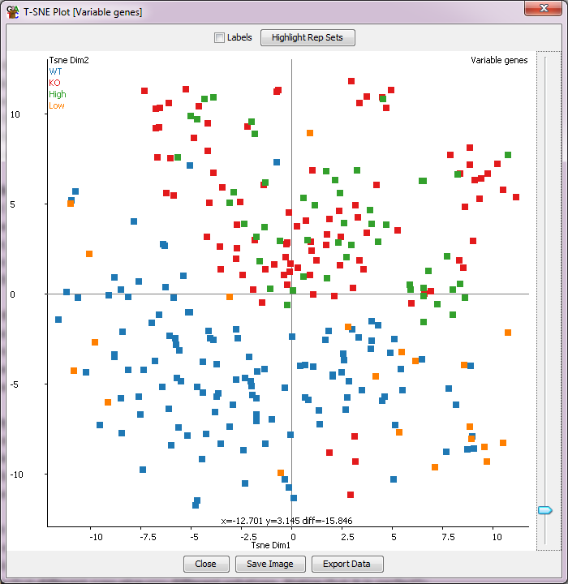

The TSNE Plot
The TSNE plot is a dimensionality reduction technique which is a way
to graphically simplify very large datasets. Within seqmonk it can be
used to cluster data stores on the basis of the current quantitation across
a large number of probes.
Conceptually the TSNE plot is similar to a PCA, but with some important
differences:
- TSNE always produces a 2D separationk, in contrast to PCA which can
produce many different components
- TSNE is non-deterministic, meaning you won't get exactly the same
output each time you run it (though the results are likely to be similar
- TSNE tends to cope better with non-linear signals in your data, so
odd outliers tend to have less of an effect, and often the visible separation
between relevant groups is improved
- TSNE offers no ability to reverse engineer the groups it identifies so
in contrast to PCA you can't make a probe list based on the separation you see

The TSNE plot will work on whichever data stores are currently displayed
in the chromosome view and will use the currently selected probe list. TSNE
tends to become very resource (both CPU and memory) hungry as the number of
probes used increases so we'd recommend limiting the plot to cases where your
number of probes is no more than a couple of thousand.
With the TSNE plot you can put your mouse over any individual
point, which will then cause the name of that point to be drawn under it so you
can tell which point is which. You can also tick the labels box to see all sample
labels (though this might get a bit messy). There is also an option to highlight any
replicate sets you've made in the project so you can see if groups of data stores
which you would expect to cluster together actually behave that way in your data.
Options
- Perplexity - this is a number which represents roughly how many samples per
cluster you expect to see. The technique is reasonably robust to the value you
use here but altering it will have some effect. The default is the number of
data stores divided by 5 (so assuming we'll see 5 groups) but with a limit of
>=2 and <=50.
- Minimum cost - TSNE is an iterative process where at each iteration the
degree of change to the last iteration is calculated. Setting this value to >0
allows the process to terminate when the degree of change is small, and before the
normal 1000 iterations have been performed. Sensible values for this will be between
1 and 5 and you only need to use this if the normal 1000 cycles are taking too
long to compute